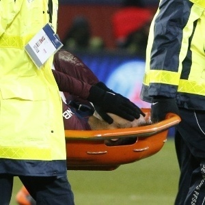

Com a vitória por 2 a 0, time soma 17 pontos na liderança do Grupo D
Com a vitória por 2 a 0, time soma 17 pontos na liderança do Grupo D  Tropeço no Morumbi
Tropeço no Morumbi  Ministro opina em artigo
Ministro opina em artigo  Rio registrou ao menos 47 mortes, mais do que em período anterior ao decreto
Rio registrou ao menos 47 mortes, mais do que em período anterior ao decreto  Delação da JBS
Delação da JBS  Campeonato Carioca
Campeonato Carioca  Mais do Cariocão
Mais do Cariocão -
 PSG teme baixa para 'jogo do ano' Exames descartam fratura, mas Neymar vira dúvida contra o Real
-

-

-

-


 TAB #148 - Sobreviventes da poliomielite
TAB #148 - Sobreviventes da poliomielite  Cerimônias secretas
Cerimônias secretas  Não é aulinha de Kama Sutra
Não é aulinha de Kama Sutra UOL MUNDIAL 2018
Faltam 108 dias
Patrocínio
 "Batendo em menina?"
"Batendo em menina?"  Grey's Anatomy
Grey's Anatomy  Noivo de Sabrina
Noivo de Sabrina  Três bebês
Três bebês  Ao som de funk
Ao som de funk  Quilos a menos
Quilos a menos especial bbb18
fechar bloco
abrir bloco
Quem deve sair: Caruso, Diego ou Lucas ?

Caruso

Diego

Lucas
A votação do UOL não possui caráter científico ou qualquer influência sobre o resultado do programa da TV Globo
resultado parcial
 Brothers na berlinda
Brothers na berlinda  "Só quer diminuir os outros"
"Só quer diminuir os outros"  "BBB" movido a bebida alcoólica
"BBB" movido a bebida alcoólica  Paredão com Caruso, Diego e Lucas
Paredão com Caruso, Diego e Lucas  Técnico Thiago Larghi elogiou
Técnico Thiago Larghi elogiou Mudança radical no esporte
Mudança radical no esporte  Brilhou contra Novo Hamburgo
Brilhou contra Novo Hamburgo  Jogador do alviverde minimizou derrota para o Corinthians na Arena
Jogador do alviverde minimizou derrota para o Corinthians na Arena  Inter empata no Gaúcho
Inter empata no Gaúcho 
 Copa da Liga Inglesa
Copa da Liga Inglesa  Após Jogos de Inverno
Após Jogos de Inverno  Fez gol em derrota
Fez gol em derrota  Problemas com pensão
Problemas com pensão  Cenas fortes
Cenas fortes  "Intruso" no golfe
"Intruso" no golfe 
 Trama terá família do século 19 que é congelada e desperta nos dias atuais
Trama terá família do século 19 que é congelada e desperta nos dias atuais  Deus Salve o Rei
Deus Salve o Rei  Tempo de Amar
Tempo de Amar  "Meu critério é a criança", disse Brown ao defender escolha surpreendente
"Meu critério é a criança", disse Brown ao defender escolha surpreendente 
 Parados no tempo
Parados no tempo  Em cartaz em SP
Em cartaz em SP  "Muito frio!"
"Muito frio!"  "Lembranças maravilhosas"
"Lembranças maravilhosas" 


 Disputa pela Presidência
Disputa pela Presidência  Regras de boa vizinhança
Regras de boa vizinhança  Spahn, crítico da política imigratória da chanceler, será ministro da Saúde
Spahn, crítico da política imigratória da chanceler, será ministro da Saúde 
 Em Manaus
Em Manaus  Na Inglaterra
Na Inglaterra  Em São Paulo
Em São Paulo  Mercado de trabalho
Mercado de trabalho 


 Ou um propósito novo
Ou um propósito novo  Cada cômodo, um posição
Cada cômodo, um posição  Esqueça a bola e o palito
Esqueça a bola e o palito  Maquiagem
Maquiagem  O churrasco perfeito
O churrasco perfeito  É preciso se informar
É preciso se informar  Olha a saúde!
Olha a saúde!  Blog Chef Funcional
Blog Chef Funcional  Blog do pediatra
Blog do pediatra mais lidas
-
1 Enquete BBB 18: Quem você prefere que seja eliminado?
Diego, Lucas e Caruso estão no paredão do reality show nesta semana; veja a votação do público do UOL -
2 Caruso, Diego e Lucas estão no quinto paredão do BBB 18
-
3 Duda Nagle sobre sexo anal: "Pode salvar uma noite especial"
-
4 Lucas chama Wagner de 'gente pequena': 'Só quer diminuir os outros'
-
5 Exames descartam fratura, mas Neymar é dúvida contra Real Madrid
você viu?


conteúdo exclusivo para assinantes
 E-COMMERCE
E-COMMERCE  E-BOOK
E-BOOK  SEGURANÇA ONLINE
SEGURANÇA ONLINE  E-BOOK
E-BOOK ![logo]()